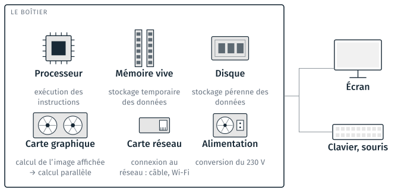
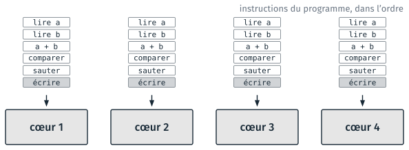
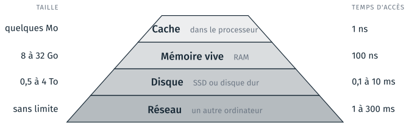
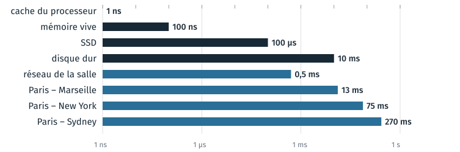
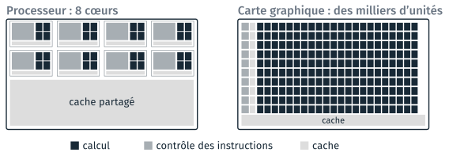
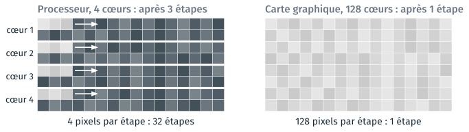
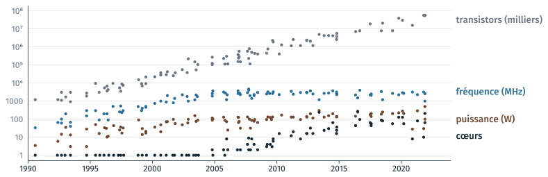

Le matériel#
Cette partie présente les composants d’un ordinateur et le rôle de chacun, puis détaille le processeur, la mémoire vive et le disque. Elle donne ensuite les ordres de grandeur des tailles et des temps d’accès, compare le processeur et la carte graphique, et suit trente ans d’évolution des processeurs. Elle se termine par l’électricité consommée par les appareils et par les services en ligne, et par le coût de ces services. La partie n’a pas de TD propre : le TD 5a, fait après la partie sur le réseau, relève les caractéristiques du poste et mesure ses temps d’accès.
Les composants d’un ordinateur#
Un ordinateur de bureau réunit six composants dans un boîtier. L’écran, le clavier et la souris sont branchés à l’extérieur.

Les composants d’un ordinateur et le rôle de chacun.#
La suite de la partie détaille le processeur, la mémoire vive et le disque. La carte graphique a été conçue pour calculer l’image affichée ; elle sert aujourd’hui aussi au calcul parallèle, présenté plus bas. La carte réseau relie le poste au réseau, par un câble ou en Wi-Fi ; elle est le sujet de la partie suivante. L”alimentation convertit le 230 V du secteur en 12 V, 5 V et 3,3 V. Un portable et un téléphone ont les mêmes composants, soudés sur une seule carte.
La carte mère#
Les composants se branchent sur la carte mère, qui les relie par des pistes de cuivre. Un ensemble de pistes entre deux composants s’appelle un bus. Les diapositives en montrent une photo : une carte Gigabyte B550 de 2020 (photo Nicolasfoster, Wikimedia Commons, CC0). On y trouve les éléments suivants.
Élément |
Rôle |
|---|---|
le processeur, sous son ventilateur |
exécute les instructions |
les emplacements de la mémoire vive |
reçoivent les barrettes ; sur la photo, quatre emplacements, deux occupés |
les emplacements pour cartes |
reçoivent les cartes d’extension ; le plus long reçoit la carte graphique |
un emplacement M.2 |
reçoit un SSD au format M.2, de 22 × 80 mm |
le jeu de puces |
relie le reste de la carte au processeur |
les connecteurs arrière |
USB, réseau, écran, son |
l’arrivée de l’alimentation, les prises des disques |
amènent le courant, relient les disques |
La mémoire, les cartes et les disques se remplacent sans changer de carte mère. Un processeur d’une autre génération demande en général une autre carte. Un poste sans carte graphique séparée, comme le PC de bureau des années 2010 photographié dans les diapositives, affiche l’image par le processeur ; ses emplacements vides permettent d’ajouter une carte graphique.
Le processeur#
Le processeur exécute les instructions du programme une par une. Une instruction est une opération élémentaire : lire une valeur en mémoire, additionner, comparer, sauter à une autre instruction. Une ligne de Python correspond à des dizaines ou des centaines d’instructions.

Un processeur à quatre cœurs : chaque cœur suit sa file d’instructions.#
Un processeur contient plusieurs cœurs, et chaque cœur suit sa propre file d’instructions. La fréquence, ou cadence, donne le nombre de cycles par seconde : une fréquence de 3 GHz fait 3 milliards de cycles par seconde. Un programme Python ordinaire occupe un seul cœur ; les autres cœurs servent aux autres programmes ouverts. Les postes de la salle ont 4 cœurs, valeur relevée au TD 5a ; un portable en a 4 à 8, un serveur de calcul 32 à 128.
La température du processeur#
En charge, un processeur travaille entre 60 et 100 °C. À la limite fixée par le fabricant, il baisse sa fréquence pour ne pas s’abîmer.
Situation |
Température de la puce |
|---|---|
au repos, bureautique |
30 à 50 °C |
en charge, poste de bureau |
60 à 90 °C |
en charge, portable fin |
80 à 100 °C |
limite du fabricant, où la fréquence baisse |
95 °C (AMD), 100 °C (Intel) |
sans radiateur ni ventilateur |
la limite en quelques secondes |
Ces valeurs sont des ordres de grandeur. Les limites sont celles des processeurs Ryzen 7000 d’AMD et Core de 13e génération d’Intel, données par les fabricants ; pour AMD (2022), 95 °C en charge est le fonctionnement prévu des Ryzen 7000.
Un processeur consomme 65 à 250 W sur une puce de 1 à 2,5 cm², soit 50 à 100 W par cm². Une plaque de cuisson en consomme moins de 10 W par cm². Cette chaleur à évacuer a arrêté la montée en fréquence vers 2005 (section Trente ans de processeurs). Un portable qui ralentit pendant un long calcul baisse sa fréquence pour rester sous la limite. Le gestionnaire des tâches de Windows n’affiche pas la température du processeur ; elle se lit avec l’outil du fabricant.
Mémoire vive et disque#
Un ordinateur a deux mémoires. La mémoire vive (RAM) est rapide et s’efface à l’extinction. Le disque est lent et conserve son contenu.
Mémoire vive (RAM) |
Disque (SSD, disque dur) |
|
|---|---|---|
Taille |
8 à 32 Go |
500 Go à 4 To |
Temps d’accès |
100 ns |
100 µs (SSD), 10 ms (disque dur) |
À l’extinction |
effacée |
conservé |
Ce qu’on y trouve |
les variables d’un programme en cours |
les fichiers, les programmes installés |
Le cours 1 a montré qu’un fichier conserve un résultat après l’arrêt du programme : il le peut parce qu’il est sur le disque. Ouvrir un fichier le copie du disque vers la mémoire vive ; l’enregistrer le recopie sur le disque. Un travail non enregistré se trouve seulement en mémoire vive, et disparaît à l’extinction.
Un SSD est fait de mémoire flash, sans pièce mobile. Un disque dur lit un plateau tournant ; il est cent fois plus lent à l’accès. Les postes de la salle ont un SSD.
Le chemin d’une donnée#
Une donnée traitée par le processeur passe par tous les étages de mémoire. Plus un étage est proche du processeur, plus il est petit et rapide.

Les étages de mémoire, avec leur taille et leur temps d’accès.#
Le cache est une petite mémoire placée dans le processeur. Il garde les dernières données lues en mémoire vive. Une boucle qui lit des valeurs voisines est donc plus rapide qu’une boucle qui saute d’un endroit à l’autre d’un tableau. Le réseau forme un étage de plus, au-delà du disque.
Ordres de grandeur : tailles#
Chaque unité vaut mille fois la précédente. Kilo, méga, giga et téra sont les préfixes employés pour les mètres.
Unité |
Octets |
Un exemple |
|---|---|---|
1 octet |
1 |
une lettre : |
1 Ko |
1 000 |
le poème du cours 1, 1 341 caractères : 1,3 Ko |
1 Mo |
1 000 000 |
une photo de téléphone : 3 Mo |
100 Mo |
108 |
une dalle d’orthophoto, 5 000 × 5 000 pixels × 3 octets : 75 Mo |
1 Go |
109 |
une heure de vidéo HD : 1 à 3 Go ; Anaconda installé : 5 Go |
1 To |
1012 |
le disque d’un portable |
La dalle d’orthophoto compte 25 millions de pixels, et chaque pixel trois octets, un par couleur (rouge, vert, bleu) ; le calcul suppose l’image sans compression. Le cours 3 compare les formats d’image.
Note
Les unités Kio, Mio et Gio valent 1 024, 1 024² et 1 024³ octets. L’explorateur de Windows affiche des Kio sous le nom « Ko » : un disque de 1 To y fait 931 « Go ».
Ordres de grandeur : temps d’accès#
La figure place les temps d’accès sur une échelle logarithmique : chaque graduation vaut dix fois la précédente, ce qui permet de montrer ensemble une nanoseconde et une demi-seconde.

Temps d’un accès ou d’un aller-retour sur le réseau, valeurs typiques.#
Les temps du réseau sont ceux d’un aller-retour depuis Paris, mesurés par wondernetwork.com en septembre 2026. Ils sont du même ordre que le temps d’accès au disque, ou plus longs. Ces temps sont des temps d’accès, jusqu’au premier octet ; le débit, le nombre d’octets reçus chaque seconde, est présenté dans la partie sur le réseau.
Si la mémoire vive valait une seconde#
Le tableau suivant reprend les temps précédents, multipliés par dix millions : un accès à la mémoire vive dure alors une seconde. La construction reprend celle de Brendan Gregg, Systems Performance, qui prend le cycle du processeur pour unité.
Accès |
Temps réel |
À l’échelle |
|---|---|---|
cache du processeur |
1 ns |
un centième de seconde |
mémoire vive |
100 ns |
1 seconde |
SSD |
100 µs |
un quart d’heure |
disque dur |
10 ms |
une journée |
Paris – Marseille, aller-retour |
13 ms |
un jour et demi |
Paris – New York, aller-retour |
75 ms |
une semaine |
Paris – Sydney, aller-retour |
270 ms |
un mois |
Pendant une lecture sur le disque dur, le processeur pourrait faire l’équivalent d’une journée d’accès à la mémoire vive ; pendant un aller-retour vers New York, une semaine. Un programme tient compte de ces écarts :
il lit un fichier une fois et garde son contenu en mémoire ;
il écrit les nombres en binaire, comme les images P5 du cours 3 ;
il emploie numpy à la place d’une boucle Python (projet 7) ;
il fait ses
commiten local, et unpushsur le réseau quand le travail est prêt (partie suivante).
Avant de modifier un programme pour le rendre plus rapide, on mesure ses temps ; le projet 7 fait ces mesures.
Processeur et carte graphique#
Le processeur consacre la surface de sa puce au contrôle et au cache, la carte graphique au calcul.

La surface d’une puce de processeur et d’une puce de carte graphique. D’après NVIDIA, CUDA C++ Programming Guide, figure 1 ; proportions indicatives.#
Le contrôle lit les instructions, prévoit les sauts et réordonne les instructions. Grâce à lui, un cœur exécute vite un programme quelconque ; il occupe de la surface. Sur la carte graphique, un contrôle pilote une rangée d’unités de calcul, qui exécutent toutes la même instruction. Le cache évite d’attendre la mémoire vive. La carte graphique en a peu : pendant qu’une rangée attend ses données, une autre calcule. Le schéma montre 10 rangées de 22 unités ; une carte courante a 3 000 à 16 000 unités, que les fabricants appellent des cœurs.
Éclaircir une image applique la même multiplication à chaque pixel. Le processeur traite les pixels quatre par quatre, la carte graphique tous à la fois.

La même opération sur chaque pixel d’une image, par un processeur et par une carte graphique.#
Une dalle de 5 000 × 5 000 pixels compte 25 millions de pixels : 3 millions d’étapes sur 8 cœurs, 1 500 étapes sur 16 000 cœurs. L’écart réel est plus faible, pour trois raisons : un cœur de processeur est plus rapide, il traite plusieurs valeurs par instruction, et l’image doit être copiée dans la mémoire de la carte graphique. La carte graphique accélère seulement une même opération appliquée à beaucoup de données.
Dans ce module, numpy (projet 7) applique une opération à tout un tableau, sur le processeur. Le calcul sur carte graphique relève des cours de traitement d’image et d’apprentissage. Une vidéo de 1 min 30, tournée par les MythBusters pour NVIDIA en 2008, illustre la différence : youtube.com/watch?v=fKK933KK6Gg.
Trente ans de processeurs#
La fréquence des processeurs a cessé de monter vers 2005. Le nombre de transistors et le nombre de cœurs continuent d’augmenter.

Trente ans de processeurs, un point par processeur. Données de Karl Rupp, microprocessor-trend-data, CC BY 4.0.#
Selon la loi de Moore, le nombre de transistors double environ tous les deux ans depuis 1970. La fréquence plafonne vers 3 GHz depuis 2005, parce que la puissance à évacuer plafonne vers 100 W. Depuis, le gain de vitesse vient du nombre de cœurs ; un programme qui n’utilise qu’un cœur gagne peu d’une génération de processeurs à l’autre.
Le tableau suivant compare d’autres valeurs en 1995 et en 2025.
1995 |
2025 |
|
|---|---|---|
mémoire vive |
8 Mo |
16 Go |
disque |
1 Go |
1 To |
prix du Go de disque |
1 000 $ |
2 centimes |
accès au réseau |
modem à 28,8 kbit/s |
fibre à 1 Gbit/s |
Puissance de calcul et consommation#
Un smartphone calcule autant que le premier superordinateur à avoir dépassé mille milliards d’opérations par seconde, en 1997, pour cent mille fois moins d’électricité.
Appareil |
Opérations par seconde |
Puissance |
Électricité par an |
|---|---|---|---|
téléphone à touches |
107 |
0,01 à 0,5 W |
0,1 kWh |
smartphone |
1012 |
1 à 5 W |
5 à 7 kWh |
ordinateur portable |
1012 |
15 à 45 W |
30 à 60 kWh |
PC de bureau et carte graphique |
1013 à 1014 |
100 à 400 W |
200 à 400 kWh |
serveur, en continu |
1013 |
300 à 800 W |
3 000 à 7 000 kWh |
ASCI Red, superordinateur, 1997 |
1,3 · 1012 |
850 000 W |
7 500 000 kWh |
Les valeurs sont des ordres de grandeur. Les opérations comptées sont des opérations en virgule flottante, processeur graphique compris. ASCI Red a mesuré 1,3 TFLOPS, pour 850 kW sans compter le refroidissement.
La dernière colonne suppose un téléphone à touches rechargé une fois par semaine (batterie de 3 Wh), un smartphone rechargé chaque jour (15 Wh), un portable allumé 8 heures par jour et un serveur allumé en continu. Le téléphone à touches consomme quelques dizaines de milliwatts, et sa batterie tient dix jours. Un smartphone a les composants d’un PC sur une puce de 2 cm, limités à 5 W par la batterie et par l’absence de ventilateur.
L’électricité des services en ligne#
Un fichier gardé en ligne consomme de l’électricité même quand personne ne le lit : les disques qui le portent restent allumés.
Quoi |
Électricité |
Équivalent |
|---|---|---|
une question à un assistant d’IA |
0,3 à 2 Wh |
10 s à 1 min de télévision |
la même, modèle « qui raisonne » |
7 à 33 Wh |
4 à 20 min de télévision |
une heure de vidéo en streaming |
80 Wh |
une ampoule LED de 10 W, 8 h |
garder 1 To en ligne pendant un an |
40 à 150 kWh |
1 à 3 disques toujours allumés |
le même To dans un tiroir |
0 |
|
centres de données du monde, 2024 |
415 TWh |
1,5 % du mondial, la France entière |
Sources : pour l’IA, Jegham et al. (2025), serveurs seuls ; IEA 2020 et 2025 ; pour la France, RTE 2024 ; la télévision est comptée à 100 W. La ligne du disque est un calcul : 5 W × 8 760 h = 44 kWh par an et par disque, pour deux ou trois copies, plus le refroidissement.
Les estimations pour une question à un assistant d’IA varient d’un facteur 100 selon la source et le périmètre compté :
Google (2025) : 0,24 Wh pour une question médiane à Gemini. Le chiffre vient du fournisseur ; il couvre les serveurs et le refroidissement, sans l’entraînement, la fabrication, le réseau ni l’appareil de l’utilisateur.
Jegham et al. (université de Rhode Island, 2025) : pour GPT-4o, 0,4 Wh pour une question courte, 1,8 Wh pour une longue ; pour o3 et DeepSeek-R1, plus de 30 Wh.
L’analyse de cycle de vie de Mistral AI (Carbone 4, ADEME, 2025), commandée par le fournisseur : 1,14 g de CO₂e et 45 mL d’eau pour une réponse de 400 tokens, fabrication et entraînement compris.
Une image générée coûte environ 60 fois plus qu’un texte (Luccioni et al., 2024).
La consommation totale vient du volume : des milliards de questions par jour. L’IEA prévoit le doublement de la consommation des centres de données d’ici 2030, surtout à cause de l’IA. En pratique, on supprime en ligne ce qui ne sert plus, et on garde les données lourdes d’un projet sur un disque local.
Ce que coûte un service en ligne#
Le coût d’un service en ligne suit le nombre de machines qui tournent, et de personnes qui les font tourner.
Service |
Ce qui tourne |
Par an |
|---|---|---|
un site personnel, pages statiques |
une part d’un serveur partagé, ou GitHub Pages |
0 à 60 € |
OpenStreetMap, la carte du monde |
deux salles de serveurs, Amsterdam et Dublin |
100 000 à 170 000 € |
Wikipédia |
plusieurs centres de données |
3,4 M$ d’hébergement |
Meta : Facebook, Instagram, WhatsApp |
des dizaines de centres de données |
72 milliards de $ d’investissement |
Sources : nom de domaine à 10 € par an, hébergement partagé à 3 à 5 € par mois ; OpenStreetMap Foundation, plan 2023 ; Wikimedia, exercice 2024-2025 ; Meta, résultats 2025.
Trois ordres de grandeur séparent un site personnel d’OpenStreetMap, et cinq séparent OpenStreetMap de Meta. OpenStreetMap fonctionne avec deux salles, parce que le rendu des tuiles est réparti entre plusieurs organisations et que leur diffusion est offerte. Chez Wikimedia, le personnel est la plus grande dépense. Un site publié sur GitHub Pages ne coûte que son nom de domaine, s’il en a un.
TD de la partie#
La partie n’a pas de TD propre. Le TD 5a, cours5/5a_mesures/, fait après la
partie sur le réseau, relève le processeur, la mémoire et le disque du poste,
puis mesure leurs temps avec un script Python. Les TD de la séance sont
réunis dans Travaux dirigés de la séance 5.